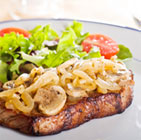

Grilled Steak with Sauteed Mushrooms
- Prep time:
- 30 minutes
- Cook time:
- 45 minutes
- Total time:
- 1 hour 15 minutes
- Serves:
- 4
If you want a really great steak for the barbecue grill, be sure to pick a cut with a good bit of marbling. Fat and age make for a great grilled steak!
- Trimmed 1-inch-thick strip sirloin, club or filet mignon steaks
- Peppercorns
- 2 tsp salt
- 1/4 cup butter
- 1 tsp Worcestershire sauce
- 2 tbsp lemon juice
- 2 oz. brandy, optional
- Use: Trimmed 1-inch-thick strip sirloin, club or filet mignon steaks
- Crush don't grind: Peppercorns coarsely on a board with a pressing, rolling movement, using the bottom of a pan.
- Press the steaks into the crushed pepper and work it into both sides of the meat with the heel of your palm or with the flat side of a cleaver.
- Sprinkle the bottom of a 9-inch skillet with: 2 teaspoons salt
- When it begins to brown, put the steaks into the pan and brown uncovered over high heat.
- Reduce to medium heat, turn steaks and cook to desired degree of rareness. In a separate pan, prepare:
- 1/4 cup butter
- 1 teaspoon Worcestershire sauce
- 2 tablespoons lemon juice
- Remove steaks from the pan in which they have been cooked and discard the pan drippings. If you wish to flambe the steaks, page 155, do so with: (2 oz. brandy)
- Serve the butter mixture separately.